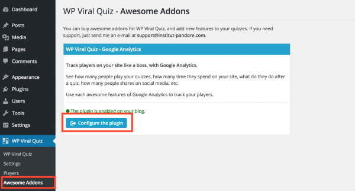

This plugin is an addon for the WP Viral Quiz plugin. You have to buy and activate WP Viral Quiz before using this Analytics Addon : http://codecanyon.net/item/wordpress-viral-quiz-buzzfeed-quiz-builder/11178623
It's explained during the "how to use it" section, but you need to create a Google Analytics if you don't have one, then install the Google Analytics snippet code on your website. If you need help to add your Google Analytic tracking code, read this nice tutorial.
Once the plugin is installed and enabled, click on the "Awesome addons" submenu of WP Viral Quiz plugin, then "configure the plugin".

In fact, there is no setting for this plugin. Just install it, and it works. The "config page" is a tutorial to learn how to find your new metrics on your Google Analytics account.
Enjoy !